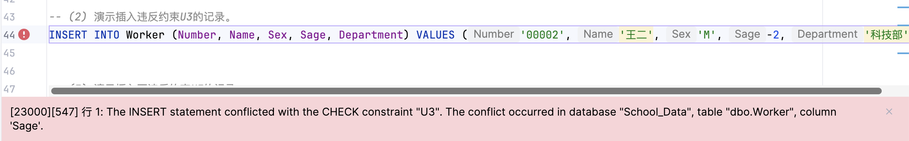
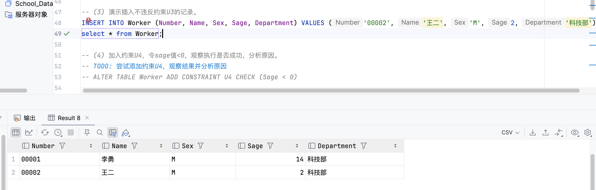
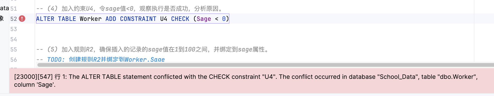
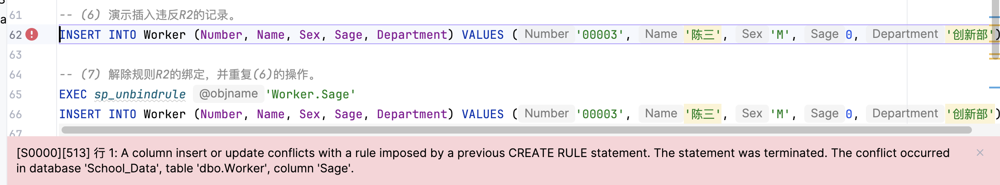
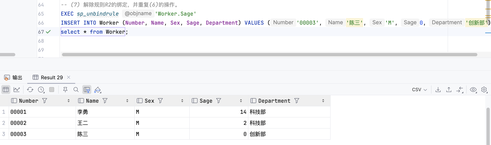
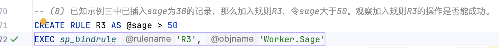
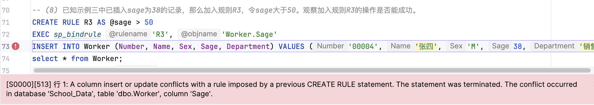

实验信息
- 实验名称: 用户定义完整性实验
- 实验日期: 2025-11-20
- 数据库: School_Data
- 实验目的: 学习使用CHECK约束和规则（Rule）来保证用户定义完整性，理解约束与规则的区别和使用场景
实验内容概述
本次实验主要包含以下内容：
- 添加CHECK约束U3，限制sage值大于等于0
- 演示插入违反约束U3的记录
- 演示插入不违反约束U3的记录
- 尝试添加约束U4（sage < 0），观察执行结果并分析原因
- 创建规则R2，限制sage值在1到100之间
- 演示插入违反规则R2的记录
- 解除规则R2的绑定，并重复插入操作
- 创建规则R3（sage > 50），观察是否能成功绑定
题目1：加入约束U3，令sage值大于等于0
实验目的
为Worker表的Sage列添加CHECK约束U3，确保sage值必须大于等于0。
实验步骤
1创建Worker表（示例）
Create Table Worker(
Number char(5),
Name char(8) constraint U1 unique,
Sex char(1),
Sage int constraint U2 check (Sage<=28),
Department char(20),
constraint PK_Worker Primary Key (Number)
)
Insert into Worker (Number, Name, Sex, Sage, Department) Values ('00001', '李勇', 'M', 14, '科技部')
2添加约束U3
ALTER TABLE Worker ADD CONSTRAINT U3 CHECK (Sage >= 0)
实验结果
在 8 ms 内完成
约束U3添加成功，现在Worker表的Sage列必须满足：
- 原有的约束U2：
Sage <= 28 - 新添加的约束U3：
Sage >= 0 - 因此Sage的有效范围是：
0 <= Sage <= 28
结果分析
- CHECK约束的作用：CHECK约束用于限制列的值必须满足指定的条件
- 约束U3成功添加：因为表中现有的数据（sage=14）满足新约束条件
- 多个约束的关系：一个列可以有多个CHECK约束，所有约束条件必须同时满足（AND关系）
题目2：演示插入违反约束U3的记录
实验目的
尝试插入一条sage值小于0的记录，验证约束U3是否有效阻止违反约束的插入操作。
实验步骤
插入违反约束的记录
INSERT INTO Worker (Number, Name, Sex, Sage, Department) VALUES ('00002', '王二', 'M', -2, '科技部')
实验结果
[23000][547] 行 1: The INSERT statement conflicted with the CHECK constraint "U3". The conflict occurred in database "School_Data", table "dbo.Worker", column 'Sage'. [S0000][3621] The statement has been terminated.

结果分析
- 插入操作被拒绝：因为sage值为-2，违反了约束U3（Sage >= 0）
- 约束生效：CHECK约束U3成功阻止了违反约束的数据插入
- 数据完整性保护：这证明了CHECK约束能够有效保护数据的完整性，防止不符合业务规则的数据进入数据库
题目3：演示插入不违反约束U3的记录
实验目的
插入一条sage值大于等于0的记录，验证符合约束的数据可以成功插入。
实验步骤
插入符合约束的记录
INSERT INTO Worker (Number, Name, Sex, Sage, Department) VALUES ('00002', '王二', 'M', 2, '科技部')
select * from Worker;
实验结果
7 ms 中有 1 行受到影响
Worker表数据:
| Number | Name | Sex | Sage | Department |
|---|---|---|---|---|
| 00001 | 李勇 | M | 14 | 科技部 |
| 00002 | 王二 | M | 2 | 科技部 |

结果分析
- 插入成功：因为sage值为2，满足约束U3（Sage >= 0）和U2（Sage <= 28）
- 约束验证通过：符合所有约束条件的数据可以正常插入
- 数据完整性：Worker表现在包含两条记录，所有记录的Sage值都在有效范围内
题目4：加入约束U4，令sage值<0，观察执行是否成功，分析原因
实验目的
尝试添加约束U4，要求sage值必须小于0，观察是否能成功添加，并分析原因。
实验步骤
尝试添加约束U4
ALTER TABLE Worker ADD CONSTRAINT U4 CHECK (Sage < 0)
实验结果
[23000][547] 行 1: The ALTER TABLE statement conflicted with the CHECK constraint "U4". The conflict occurred in database "School_Data", table "dbo.Worker", column 'Sage'.

结果分析
- 添加约束失败：因为Worker表中已经存在数据（sage=14和sage=2），这些数据都不满足新约束U4（Sage < 0），所以添加操作失败了。
- 约束验证机制：在SQL Server中，添加CHECK约束时，系统会检查表中现有的所有数据是否满足新约束条件。如果现有数据违反约束，添加约束的操作会被拒绝，这样可以保证数据的一致性。即使约束U4本身语法正确，但由于与现有数据冲突，无法添加。
- 解决方案：要解决这个问题，可以先删除或修改现有数据，使其满足新约束。或者使用
WITH NOCHECK选项，不过这个选项不推荐使用，因为它可能导致数据不一致。
- 添加CHECK约束时，必须确保表中所有现有数据都满足新约束条件
- 这是数据库系统保证数据完整性的重要机制
题目5：加入规则R2，确保插入的记录的sage值在1到100之间，并绑定到sage属性
实验目的
创建规则R2，限制sage值在1到100之间，并将规则绑定到Worker表的Sage列。
实验步骤
1创建规则R2
CREATE RULE R2 AS @sage BETWEEN 1 AND 100
GO
2绑定规则到Worker.Sage
EXEC sp_bindrule 'R2', 'Worker.Sage'
CREATE RULE 和 EXEC sp_bindrule 不能在同一批处理中执行，必须使用 GO 分隔或分开执行。
实验结果
CREATE RULE R2: 在 4 ms 内完成 EXEC sp_bindrule: [S0001][15514] Rule bound to table column. 在 10 ms 内完成
规则R2创建成功并已绑定到Worker.Sage列。
结果分析
- 规则（Rule）的概念：规则是SQL Server中用于限制列值的另一种机制，类似于CHECK约束。它使用
@列名作为参数来定义规则条件，然后通过sp_bindrule存储过程将规则绑定到指定的列。 - 规则与约束的区别：规则是独立的对象，可以绑定到多个列，而CHECK约束是表的一部分，只能应用于单个列。不过需要注意的是，规则在SQL Server的未来版本中可能被移除，所以建议使用CHECK约束。
- 当前状态：Worker.Sage列现在同时受到CHECK约束U2（
Sage <= 28）、CHECK约束U3（Sage >= 0）和规则R2（1 <= Sage <= 100）的限制。由于所有条件必须同时满足，实际有效范围是1 <= Sage <= 28，这是所有条件的交集。
题目6：演示插入违反R2的记录
实验目的
尝试插入一条sage值不在1到100之间的记录，验证规则R2是否有效阻止违反规则的插入操作。
实验步骤
插入违反规则的记录
INSERT INTO Worker (Number, Name, Sex, Sage, Department) VALUES ('00003', '陈三', 'M', 0, '创新部')
实验结果
[S0000][513] 行 1: A column insert or update conflicts with a rule imposed by a previous CREATE RULE statement. The statement was terminated. The conflict occurred in database 'School_Data', table 'dbo.Worker', column 'Sage'. [S0000][3621] The statement has been terminated.

结果分析
- 插入操作被拒绝：因为sage值为0，违反了规则R2（sage必须在1到100之间）
- 规则生效：规则R2成功阻止了违反规则的数据插入
- 规则验证：虽然sage=0满足CHECK约束U3（Sage >= 0），但违反了规则R2，因此插入失败
- 规则优先级：规则和约束都会进行验证，必须同时满足所有规则和约束才能插入数据
题目7：解除规则R2的绑定，并重复(6)的操作
实验目的
解除规则R2与Worker.Sage的绑定，然后重复题目6的插入操作，观察结果。
实验步骤
1解除规则R2的绑定
EXEC sp_unbindrule 'Worker.Sage'
2重复插入操作（插入sage=0的记录）
INSERT INTO Worker (Number, Name, Sex, Sage, Department) VALUES ('00003', '陈三', 'M', 0, '创新部')
select * from Worker;
实验结果
[S0001][15522] Rule unbound from table column. 在 6 ms 内完成
11 ms 中有 1 行受到影响
Worker表数据:
| Number | Name | Sex | Sage | Department |
|---|---|---|---|---|
| 00001 | 李勇 | M | 14 | 科技部 |
| 00002 | 王二 | M | 2 | 科技部 |
| 00003 | 陈三 | M | 0 | 创新部 |

结果分析
- 解除绑定成功：规则R2已从Worker.Sage列解绑，操作顺利完成。
- 插入成功：解除绑定后，sage=0的记录可以成功插入。这是因为解除绑定后，规则R2不再对Worker.Sage列生效，而sage=0满足CHECK约束U3（Sage >= 0）和U2（Sage <= 28），所以插入操作成功了。
- 规则与约束的独立性：规则可以动态绑定和解绑，不影响表结构，而CHECK约束是表结构的一部分，需要ALTER TABLE来修改。解绑规则后，该列只受CHECK约束限制，这体现了规则和约束在管理方式上的不同。
题目8：已知示例三中已插入sage为38的记录，那么加入规则R3，令sage大于50。观察加入规则R3的操作是否能成功
实验目的
在Worker表中已存在sage=38的记录的情况下，创建规则R3（sage > 50）并绑定到Worker.Sage，观察操作是否能成功。
实验步骤
1创建规则R3
CREATE RULE R3 AS @sage > 50
GO
2绑定规则R3到Worker.Sage
EXEC sp_bindrule 'R3', 'Worker.Sage'
3尝试插入sage=38的记录
INSERT INTO Worker (Number, Name, Sex, Sage, Department) VALUES ('00004', '张四', 'M', 38, '销售部')
实验结果
CREATE RULE R3: 在 5 ms 内完成
[S0001][15514] Rule bound to table column. 在 6 ms 内完成
[S0000][513] 行 1: A column insert or update conflicts with a rule imposed by a previous CREATE RULE statement. The statement was terminated. The conflict occurred in database 'School_Data', table 'dbo.Worker', column 'Sage'. [S0000][3621] The statement has been terminated.


结果分析
- 规则R3创建和绑定成功：规则R3（sage > 50）成功创建并绑定到Worker.Sage列。这里有个关键发现：与CHECK约束不同，绑定规则时不会检查表中现有数据是否满足规则条件。这意味着即使表中已经有违反规则的数据，规则也能成功绑定。
- 插入操作失败：尝试插入sage=38的记录时失败了，因为38不满足规则R3的要求（sage > 50）。这说明规则确实在起作用，阻止了不符合条件的数据插入。
- 规则与约束的重要区别：CHECK约束在添加时会验证表中所有现有数据，如果现有数据违反约束，添加操作会失败。而规则在绑定到列时不会验证现有数据，只对后续的插入和更新操作生效。这可能导致表中存在违反规则的历史数据，但这些历史数据不会被规则影响。
- 实际影响：Worker表中现有的记录（sage=14, 2, 0）都违反了规则R3（sage > 50），但这些记录仍然存在于表中，因为规则只对新的插入和更新操作生效。现在无法插入sage <= 50的新记录，但已有的数据不受影响。
实验总结
主要知识点
- CHECK约束：用于限制列的值必须满足指定的条件。添加时会验证表中所有现有数据，如果现有数据违反约束，添加操作会失败。一个列可以有多个CHECK约束，所有约束必须同时满足。
- 规则（Rule）：是SQL Server中用于限制列值的另一种机制，是独立的对象，可以绑定到多个列。绑定到列时不会验证现有数据，只对后续操作生效。使用
sp_bindrule绑定，使用sp_unbindrule解绑。 - 约束与规则的区别：约束在添加时验证现有数据，规则在绑定时不验证。约束是表的一部分，规则是独立对象。规则是遗留功能，建议使用CHECK约束。规则可以动态绑定和解绑，约束需要ALTER TABLE修改。
实验心得
通过这次实验，我对CHECK约束和规则的使用有了更清楚的认识。最让我印象深刻的是规则在绑定时不会验证现有数据，这和CHECK约束的行为完全不同。实际用的时候，还是优先考虑CHECK约束比较好，因为它更符合现在的SQL标准，而且对数据完整性的保证也更可靠。